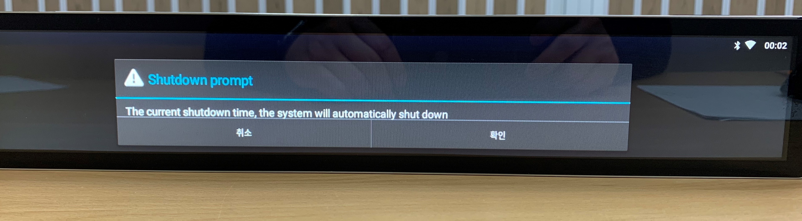

ADMILL
영어 오류 메세지 뜨고 꺼집니다.
TIP 광고 운영시간은 10:00 ~ 22:00 입니다.
※ 이 때 광고 기기가 스스로 인식하는 시간이 운영시간 이외일 경우 꺼진다는 영어 메세지 출력.
STEP1. 준비물: 마우스, 스마트폰(아이폰보다 안드로이드가 잘됨)

STEP2. 마우스 usb를 기기 뒷면에 꽂으면 마우스 활성화

STEP3. 마우스 우클릭으로 뒤로가기 (배경화면으로 이동됨)
STEP4. 배경화면에서 설정 어플(⚙️) 클릭

STEP5. 설정창에서 WIFI 클릭 (핸드폰 핫스팟 준비)